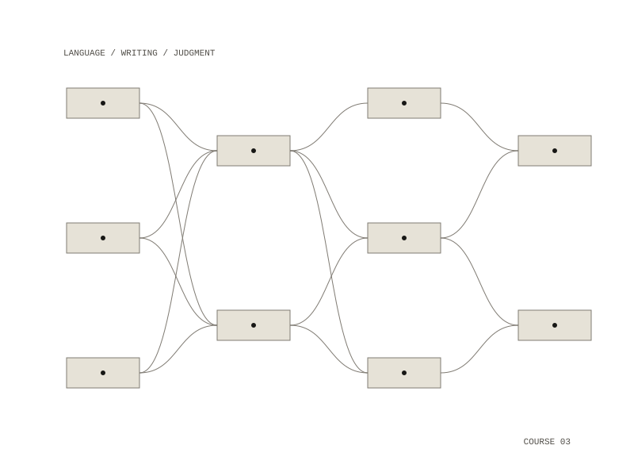

Language, Technology, and the Human
A seven-week literature and humanities seminar. It reads philosophy, literature and writing on technology to ask how language shapes thought, knowledge and human experience, and what changes when computational systems generate language, classify people and take part in decisions about human lives.

Weeks
- Week 1, Language, Meaning, and the Human: Ludwig Wittgenstein, Philosophical Investigations §§1–43, and Sylvia Wynter, "The Ceremony Must Be Found: After Humanism".
- Week 2, Writing as Technology: Plato, Phaedrus 274b–277a, and Vilém Flusser, Does Writing Have a Future?
- Week 3, Language Beyond the Human: Ursula K. Le Guin, "The Author of the Acacia Seeds", N. Katherine Hayles, Unthought, and Stephen Wolfram on next-word prediction.
- Week 4, Classification and the Production of Reality: Michel Foucault, The Order of Things (Preface), and Wendy Hui Kyong Chun, Discriminating Data.
- Week 5, Language and Transformation: Dodie Bellamy, TV Sutras, and surrealist writing procedures.
- Week 6, Thinking and Responsibility: Hannah Arendt, "Thinking and Moral Considerations", and Emily M. Bender and Alexander Koller, "Climbing Towards NLU".
- Week 7, Opacity and the Ethics of Judgment: Édouard Glissant, "For Opacity" from Poetics of Relation, and Virginia Eubanks, Automating Inequality.
The weekly experiment
Each meeting includes a short, ungraded experiment that needs no computer or internet access. Students invent a language game that another group has to learn through use, predict the next word of sentences together, build competing taxonomies for the same material, and write by Exquisite Corpse and automatic writing. In the last two weeks they follow a procedure literally even when its results seem wrong, and weigh an institutional decision about a fictional person.
Format and assessment
Each two-hour meeting runs from a ten-minute opening lecture, through close reading and discussion, two 15-minute student presentations and the experiment, to an introduction to the next week's readings. Readings are provided in print.
Grades come from participation (20%), three reading responses of 300–500 words (15%), presentations (25%) and a final paper of about ten pages, 2,500–3,000 words (40%). A proposal is due in Week 4 and the paper one week after the last class.
seven weeks, one two-hour seminar a week
printed readings; no computers or internet